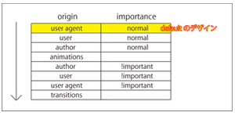
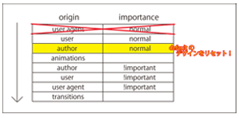

button、selectなどの古いコントロールは、OSに合わせたスタイル、デザインであった。
デロッパーは、コントロールのデフォルトスタイルを調整。それが手間で、それを修正。
と、先生からinput属性で変化がありましたよー。と教えて頂いたのですが、
発表時点でも正直な話、あまり理解できていませんでした。
学習を重ねたり、また、ディベートを通じて少しはどういうことか理解出来ました。
そもそもOSごとにデザイン、あるいは初期位置など表示が異なるのは、ブラウザごとに初期値が異なるから。（デフォルトの値）
以下、簡易的なカスケードを順に表した表です。

※表について
だから、デロッパーは初期値をリセットするいわゆる、リセットCSSを用いると。
教えて頂いた内容ではありますが、safariなどでは、統一感がないと検証もして頂きました。
自身ではまだ、javascriptやCSSの知識も浅いので複雑なカスタムはできませんが、教えて頂いたbootstrapなどは大変便利に感じました。
自分で作成したこのページもそうですが、自分で見てもデザインが古く見え、昔のサイトみたい、と思います。
ディベートでも、色々質問いただいたCSSのプロパティについての質問は自分の知識の無さを改めて実感する事が出来ましたし、
調べ直す事で、また学習できたと思います。何よりCSSについて学習する機会を頂けた事に今は感謝しています。
javascrirtなどの学習も今後は行い、より良いページデザインが今後は出来たらと思いました。
本当に色々と学ぶ事が出来ましたし、他の参加者の方と交流する事ができて、webの分野の学習への興味が持てた事が
私の一番の収穫でした。これからも地道に学習を続けて、ゆくゆくは今よりいいページ、アプリが作成できたら
と思いました。皆さんとディベートする事ができ、またこのゼミに参加して本当に良かったです。